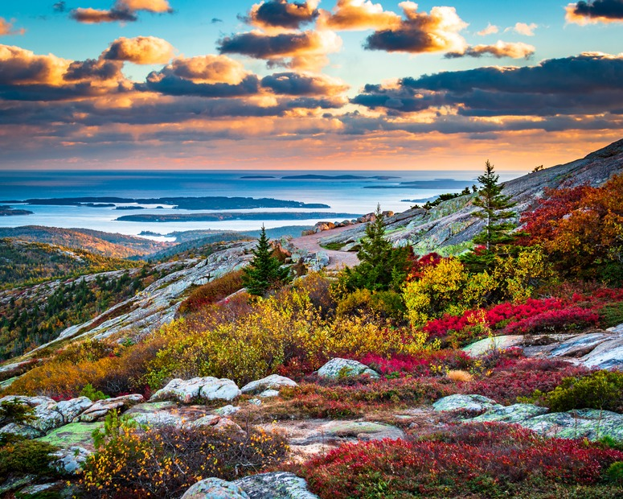
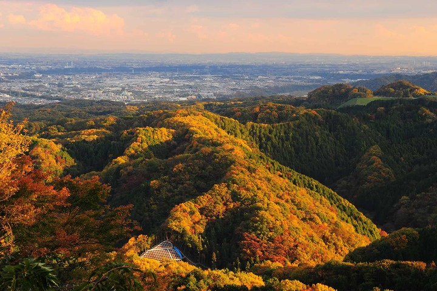
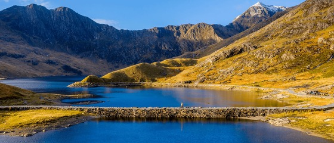

Location: Tokyo, Japan
Difficulty: 1.5 / 5 Stars ★
Elevation Gain: 400 m (1,312 ft)
Distance: 3.8 km (2.4 miles loop)
Price: Free
Features wide, fully paved pathways lined with cedar trees, ancient Buddhist temples, and views of Mount Fuji on clear days.

Location: Gwynedd, Wales
Difficulty: 2 / 5 Stars ★★
Elevation Gain: 975 m (3,199 ft)
Distance: 14 km (9 miles)
Price: Free
A non-technical gravel path following the mountain railway track. Offers a steady incline with panoramic views of the Welsh lakes and valleys.

Location: Maine, USA
Difficulty: 2 / 5 Stars ★★
Elevation Gain: 340 m (1,115 ft)
Distance: 5.5 km (3.5 miles)
Price: $35 USD
A gentle climb over smooth granite ledges and open pine forests, rewarding hikers with ocean views over Frenchman Bay.